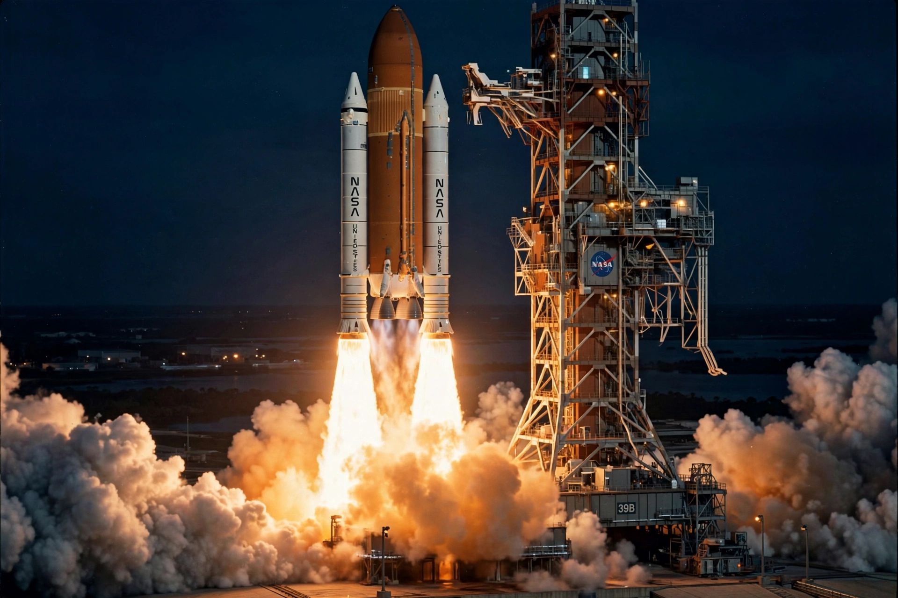

Space Launch System
From Wikipedia, the free encyclopedia
| Space Launch System | |
|---|---|
| Manufacturer | NASA (Boeing, Northrop Grumman, Aerojet Rocketdyne) |
| Country | United States |
| First flight | 16 November 2022 (Artemis I) |
| Status | Operational |
| Height | 98 m (Block 1) |

SLS launches Artemis I, 16 November 2022.The Space Launch System (SLS) is an American super heavy-lift expendable launch vehicle developed by NASA from Space Shuttle-derived technology. It is the most powerful rocket ever flown successfully, and the booster for the Artemis program of crewed lunar exploration, launching the Orion spacecraft.
The rocket's core stage is powered by four RS-25 engines — refurbished Space Shuttle main engines — flanked by two five-segment solid rocket boosters derived from the Shuttle's four-segment boosters. Its first flight, the uncrewed Artemis I mission, launched on 16 November 2022 after years of delays.
Development
SLS was mandated by Congress in 2010 after the cancellation of the Constellation program and its Ares rockets, with requirements to reuse Shuttle and Ares components and contracts. The programme has been criticised for its high cost — each launch is estimated at over US$2 billion — and its slow flight rate of roughly one mission per year or less, but supporters cite its unmatched lift capability and human-rating.
The Block 1 configuration uses the Interim Cryogenic Propulsion Stage; later Block 1B and Block 2 variants add the more powerful Exploration Upper Stage and advanced boosters, raising payload to low Earth orbit from about 95 tonnes toward 130 tonnes.
Flights
Artemis I (2022) sent an uncrewed Orion around the Moon and back. Artemis II, the first crewed flight, is planned as a lunar free-return loop without landing; Artemis III aims to land astronauts near the lunar south pole using a separately launched commercial lander, with SLS delivering the crew in Orion to rendezvous in lunar orbit near the Gateway station.
See also
Artemis program · Orion (spacecraft) · Saturn V · Space Shuttle · Lunar Gateway